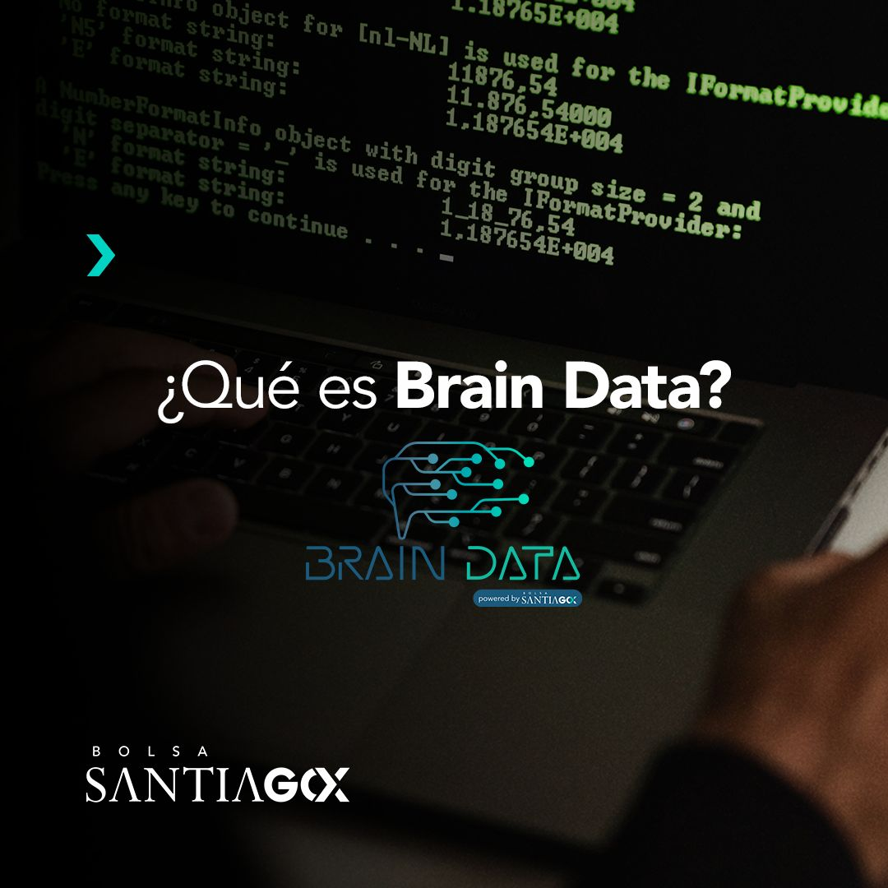

Soy Carlos Oliveros, un profesional apasionado por la tecnología, la analítica, la ciencia de datos, las finanzas y las inversiones. Mi enfoque principal es aplicar estos conocimientos de manera práctica en el ámbito empresarial, con el objetivo de resolver problemas de forma eficiente mediante soluciones innovadoras y tecnológicas.
Me he desempeñado en el rubro tecnológico-financiero la mayor parte de mi trayectoria profesional.
Puedes leer más de mi experiencia aqui.
Puedes revisar la conferencia internacional que realicé sobre "Data Science, Machine Learning & AI: de la Teoría a la Práctica." aqui:
Puedes revisar el panel que realicé sobre "Lineamientos para Factibilizar la Implementación de Tecnologías y Disruptivas en el Mercado de Valores y el Sistema Financiero Nacional." aqui:
Mis intereses profesionales son:
Data Science.
Matemática y estadística.
Finanzas e inversiones.
Transformación e innovación digital.
Algoritmos de Machine Learning e Inteligencia Artificial.
Tecnología Cloud: SaaS, PaaS, IaaS y CaaS.
Cloud computing.
Metodologías ágiles de desarrollo (Scrum, SaFe, entre otros).
Visualización de datos.
Implementación mejoras en el proceso de desarrollo de software.
Contacto
Si deseas comunicarte conmigo, puedes hacerlo a través de
de correo electrónico: cfoliveros@uc.cl.
Estaré encantado de escuchar tus comentarios o responder cualquier pregunta que puedas tener.
Desde marzo de 2023, desempeño el cargo de Subgerente TI Corredora de Bolsa (IT Associate Director - Sales & Trading). En esta posición, tengo la responsabilidad de supervisar y dirigir el ámbito tecnológico de la Corredora de Bolsa,
área Sales & Trading.
Mis principales responsabilidades incluyen:
Desarrollo e implementación de soluciones de software para trading y post-trading.
Generación de Lineamientos Estratégicos y Tecnológicos: Desarrollo y establecimiento de lineamientos estratégicos y tecnológicos para garantizar la eficiencia y la innovación en nuestras operaciones.
Gestión del Portafolio de Proyectos: Dirijo el portafolio de proyectos tecnológicos de alto impacto, asegurando su ejecución exitosa y alineación con los objetivos comerciales.
Transformación Digital: Impulso procesos de transformación digital, buscando mejorar la eficiencia y la agilidad operativa a través de la implementación de tecnologías avanzadas.
Liderazgo y Gestión de Equipos: Superviso y lidero los equipos encargados de implementar y desarrollar soluciones tecnológicas para Trading & Post-trading en la Corredora de Bolsa de Chile.
Desde mayo 2022 hasta marzo del 2023 me desempeñé como Senior Products & Digital Innovation Lead Manager.
En este rol estuve encargado de promover la definición, implementación y mejora de nuevas iniciativas orientadas
a la transformación digital de productos, procesos y servicios bursátiles de la Bolsa de Santiago.
Algunas iniciativas implementadas :
Implementación arquitectura Big Data con lógica Microsoft Azure - Batch.
Diseño y habilitación de plataforma web de reportería analítica con información transaccional bursátil - Brain Data.
Generación y despliegue de Datalake Gen 2.
Migración servidores on premise a Cloud.
Generación zona de descubrimiento en nube para colaboración abierta - Cloud computing.
Generación de lineamientos de Market Surveillance.
Entre febrero a abril del 2022 me desempeñé como Exchange Products Manager Senior. En este rol lideré proyectos de alto impacto estratégico y de innovación bursátil.
Entre octubre 2019 hasta febrero 2022 me desempeñé como Exchange Products Manager. Fui responsable de liderar células multi disciplinarías bajo el rol de Product Owner
en desarrollo de proyectos TI bajo metodología Agile/Scrum.
Puedes ver el portafolio de mis proyectos selecionando:
Durante mi periodo en la Bolsa de Santiago (BCS) obtuve los siguientes reconocimientos:
2022: Premio: “Desempeño de excelencia” – Bolsa de Comercio de Santiago.
2021: Premio: “Desempeño de excelencia” – Bolsa de Comercio de Santiago.
2020: Premio: “Desempeño de excelencia” – Bolsa de Comercio de Santiago.
2020: Premio: “Compromiso Bolsa de Comercio de Santiago".
Softwares y lenguaje de programación utilizados: Python (Jupyter Notebook), Microsoft SQL Server, Power BI, Bloomberg, JIRA y
herramientas de Microsoft Office.
Entre marzo a septiembre de 2019 me desempeñé como Analista de Inteligencia de Negocios bajo modalidad de Memorista de Titulo en el
Departamento de Inteligencia de Negocios.
Implementé y desarrollé modelos predictivos y descriptivos a través de herramientas de minería de datos y Machine Learning (Python), para cartera de colocaciones
de productos de consumo asi como Dashboards para visualización de los mismos (Qliksense).
Puedes ver mi trabajo: "Portfolio Management: Arquitectura, diseño e implementación de modelos de stock, venta y riesgo para
productos de Banca Personas en sector financiero" seleccionando:
Entre enero hasta marzo de 2019 , realicé mi Práctica Profesional en el Departamento de Investigación y Desarrollo de
Circulantes. Desarrollé e implementé métodos de validación estadística de procesos.
Softwares y lenguaje de programación utilizados: herramientas de Microsoft Office y macros.
Ingeniero Civil Industrial titulado con distinción máxima de la Universidad de Concepción,
con experiencia laboral como Lead Manager de Innovación Digital y Product Owner Senior
en Mercados Bursátiles y Financieros, enfocado en proyectos tecnológicos
y de innovación de alto impacto.
Con variados cursos en análisis financiero,
programación y actualmente cursando Magíster de Tecnología de Información y Gestión en Pontificia Universidad Católica de Chile.
Profesional orientado a participar de proyectos de alto impacto con desarrollos tecnológicos desafiantes
y analítica avanzada enfocada en datos, cumplimiento de objetivos y resolución de problemas.
1. Creación y diseño de Brain Data - Bolsa de Santiago

Responsable por la creación, diseño e implementación de la Plataforma Brain Data de la Bolsa de Santiago.
Brain Data representa la última innovación en el ámbito de Big Data & Analytics, donde consolidamos la información del mercado y la ponemos a tu alcance. Permite la gestión y análisis de datos a gran escala, descubriendo información
relevante sobre el mercado chileno. Esta plataforma digital e interactiva es
accesible desde cualquier dispositivo, garantizando el acceso continuo a la información y análisis del mercado.
2.Diseño y despliegue de Arquitectura Big Data Batch - MS Azure
Investigación, diseño e implementación de Plataforma Big Data Analytics, la cual permite
el tratamiento de datos a gran escala con el fin de propiciar
el descubrimiento de información, la gestión y analítica avanzada de datos.
A partir de esta plataforma se generán soluciones basadas
en Inteligencia Artificial, Machine Learning, Dashboards analíticas, API, entre otros.
3. Mejoras de Click & Vote - Votación electronica con tecnología Blockchain
Administración, actualización y despliegue de mejoras de Plataforma Click & Vote, la cual busca facilitar el proceso de votación
remota en juntas de accionistas, a través de una herramienta segura y
privada bajo la tecnología Blockchain, la que garantiza mayor
seguridad, confianza y trazabilidad de la información.
La plataforma utiliza tecnología Blockchain, que cumple principios fundamentales para garantizar
que el ejercicio de la votación respete los derechos de los votantes,
exigencias regulatorias y entregue la confianza al emisor de que todo el proceso se realizará de
forma íntegra y segura.
Puedes ver el webinar y presentación seleccionando:
Lideré la implementación de la modalidad de cotización cruzada ("Cross Listing") que permite a inversionistas, tanto institucionales como individuales,
comprar y vender valores colombianos (en CLP y/o USD) listados en la Bolsa de Valores Colombiana (BVC) a través de una corredora de bolsa nacional y bajo las reglas locales directamente en la Bolsa de Comercio de Santiago (BCS).
Esta iniciativa busca incrementar la liquidez y competitividad del mercado local, y se enmarca en un acuerdo suscrito entre la BCS y
la BVC para el doble listado accionario en ambas plazas bursátiles.